Abstract
The growing interest in autonomous driving calls for realistic simulation platforms capable of accurately simulating cooperative perception process in realistic traffic scenarios. Existing studies for cooperative perception often have not accounted for communication latency and errors in real-world environments. To address this gap, we introduce EI-Drive, an edge-AI based autonomous driving simulation platform that integrates advanced cooperative perception with more realistic communication models. Built on the CARLA framework, EI-Drive features new modules for cooperative perception while taking into account communication latency and errors, providing a more realistic platform for evaluating cooperative perception algorithms. In particular, the platform enables vehicles to fuse data from multiple sources, improving situational awareness and safety in complex environments. With its modular design, EI-Drive allows for detailed exploration of sensing, perception, planning, and control in various cooperative driving scenarios. Experiments using EI-Drive demonstrate significant improvements in vehicle safety and performance, particularly in scenarios with complex traffic flow and network conditions.
Seamlessly Simulates Cooperative Perception and Realistic Communication Models
Integrating cooperative perception with realistic communication models, EI-Drive allows the exploration of how communication latency and errors affect not only cooperative perception but also the overall performance of autonomous vehicles.
Collision avoidance and traffic detection with cooperative perception
EI-Drive has various built-in scenarios tailored for cooperative perception experiments, where the spectator vehicles and RSUs share perception information with the ego vehicle.
|
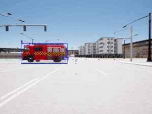
Ego vehicle |
➕ |
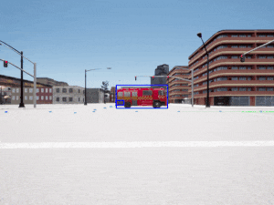
Spectator vehicle |
➡️ |
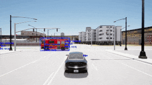
Cooperative perception |
|
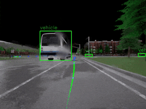
Ego vehicle |
➕ |
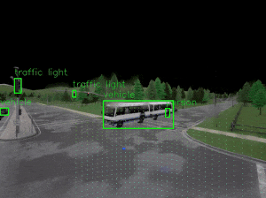
RSU |
➡️ |
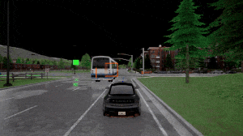
Cooperative perception |
|
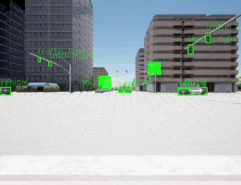
Ego vehicle |
➕ |

RSU |
➡️ |
Cooperative perception |
Communication latency and errors
EI-Drive has great flexibility to simply apply communication latency and errors to any perception processes, allowing the researches across both communication and autonomous driving. The communication latency and errors not only impair the performance of cooperative perception, but also have negtive influence to the behavior of the ego vehicle.
|
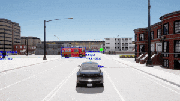
Cooperative perception ✅ |

Cooperative perception + Communication errors ❌ |
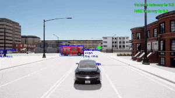
Cooperative perception + Communication latency ❌ |
|
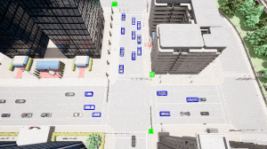
Cooperative perception |
Cooperative perception + Communication errors |
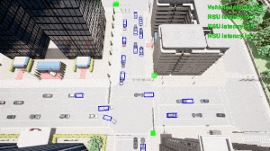
Cooperative perception + Communication latency |
Perception methods and multi-modality
EI-Drive supports multiple perception methods and multi-modal sensor inputs, greatly enriches the experiment settings.
|
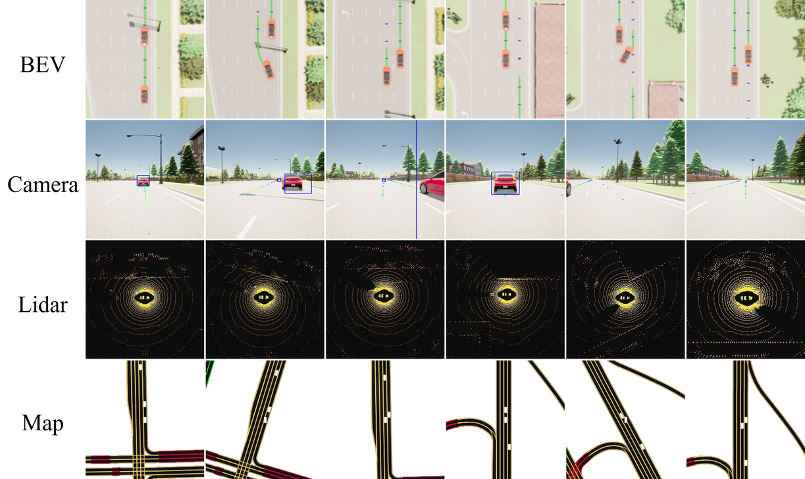
Multi-modal inputs |
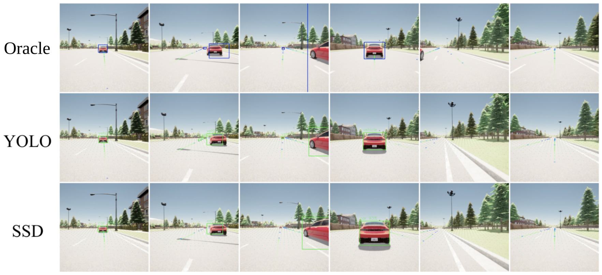
Multiple perception methods |
Experiment results
We conduct extensive experiments related to cooperative perception and communication latency and errors to evaluate their influence on the overall performance.
Collision avoidance experiments
In collision avoidance, the ego vehicle is affected by cooperative perception with different settings. Here the larger minimal distance indicates better safety. The tables below demonstrate that cooperative perception improves safety, especially the data shared by RSUs, and the communication latency and error impair the performance.
|
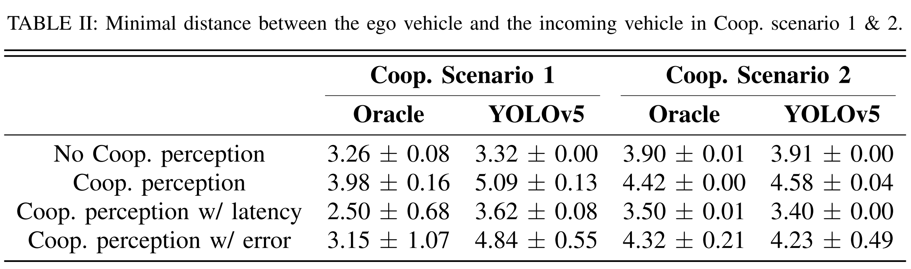
|
| 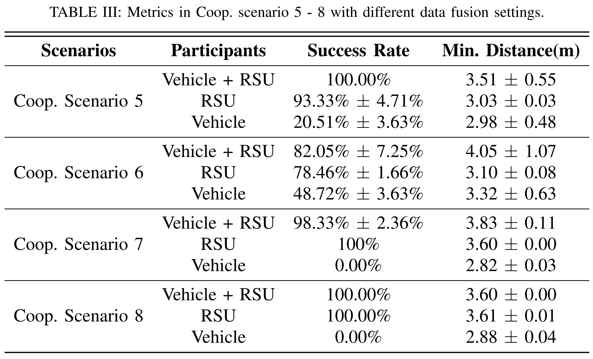 |
Traffic detection experiments
The figures below demonstrate that cooperative perception significantly extends the perception capability of the ego vehicle, especially the data shared by RSUs.
|
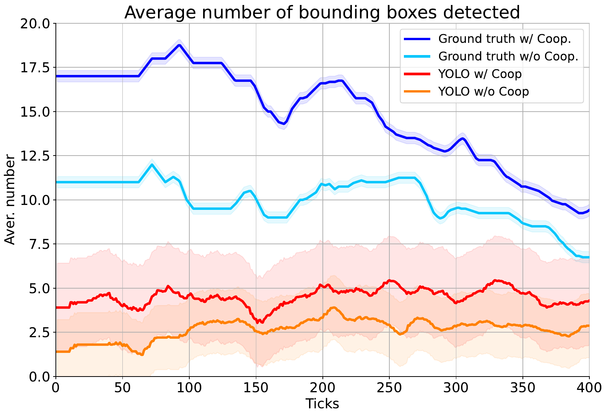
Coop. scenario 3. |
|
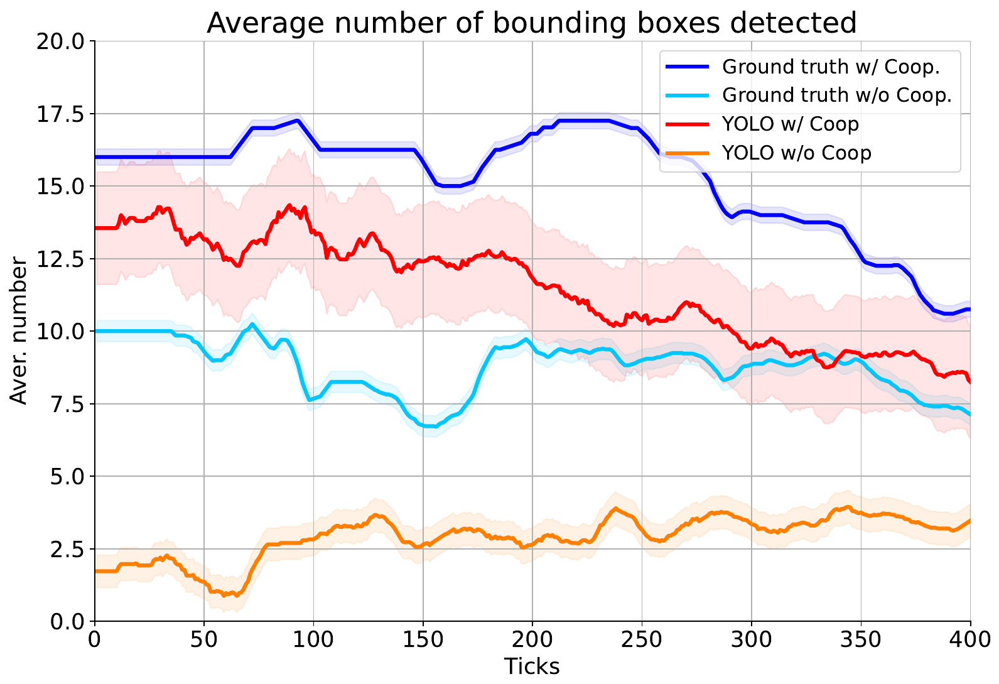
Coop. scenario 4. |
|
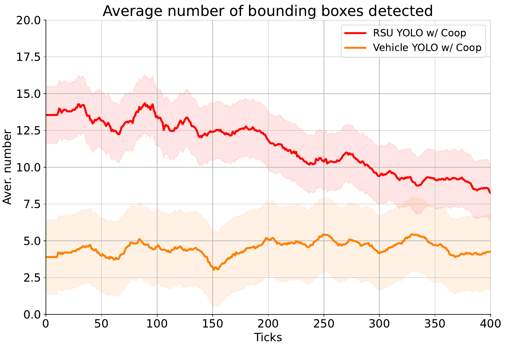
Comparison between the spectator vehicle and RSU. |
BibTeX
@article{zhou2024ei,
title={EI-Drive: A Platform for Cooperative Perception with Realistic Communication Models},
author={Zhou, Hanchu and Xie, Edward and Shao, Wei and Gao, Dechen and Dong, Michelle and Zhang, Junshan},
journal={arXiv preprint arXiv:2412.09782},
year={2024}
}